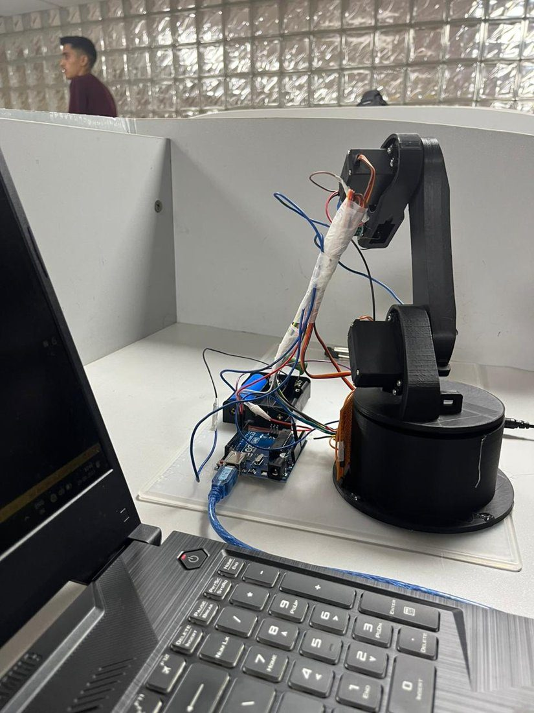

Robotics · Embedded · Academic project · 2023
Electromagnetic Robotic Arm
A 3-degree-of-freedom arm that picks up iron and steel parts with an electromagnet instead of a mechanical gripper, for example pulling iron filings out of sand. It runs on an Arduino Uno with three MG996R servos and a relay-switched electromagnet.
- Arduino
- PWM servos
- Relay
- Electromagnet
- 3D printing
3 DOFbase · elbow · wrist
3 × MG996R11 kg·cm servos
~14 sper pick-and-place cycle
50 °/sspeed limit in software

My part: electronics, wiring and firmware
- Servo wiring and power: servo signals on PWM pins D3/D5/D6, with soldered wiring that holds up while the arm moves.
- Electromagnet circuit: powered from a Li-ion pack with a battery management system and switched through a relay, kept separate from the Arduino's 5 V logic.
- Motion firmware: each joint moves one degree every 20 ms, for smooth movement with less current draw.
- Testing: iron filings separated from a mixture, and a nail picked up and dropped at a set spot.
Looking back: 2026 review and v2 design
I reviewed the 2023 build three years later and found eight issues, including:
- a
forloop that never runs; - joints jumping back to home at the start of each cycle;
- manual magnet switching;
- no flyback diode across the electromagnet coil;
- servo power taken from the wrong supply.
The v2 design fixes all of them:
- a relay controlled by the Arduino;
- all joints moving together so they arrive at the same time;
- a pose table worked out from the arm's kinematics;
- a dedicated 6 V supply for the servos;
- a test plan with measurements.
The full Arduino code is in the documentation.
← All projects